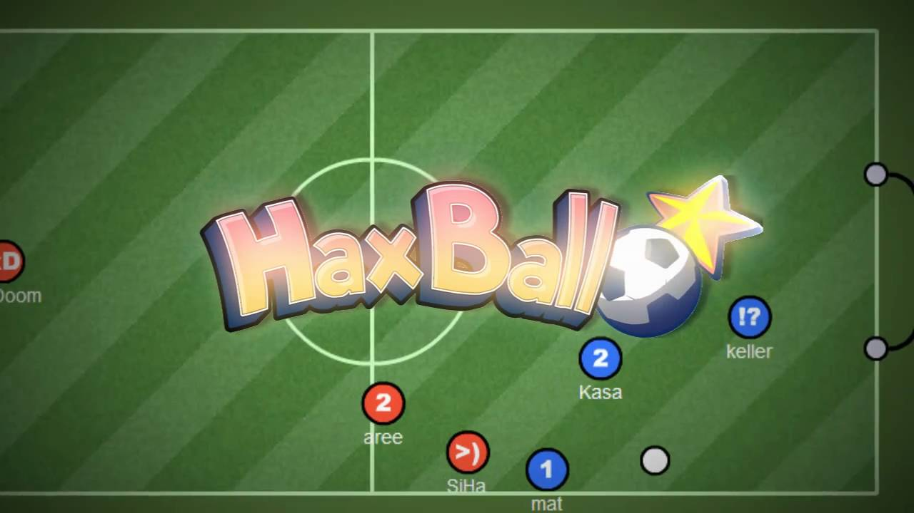
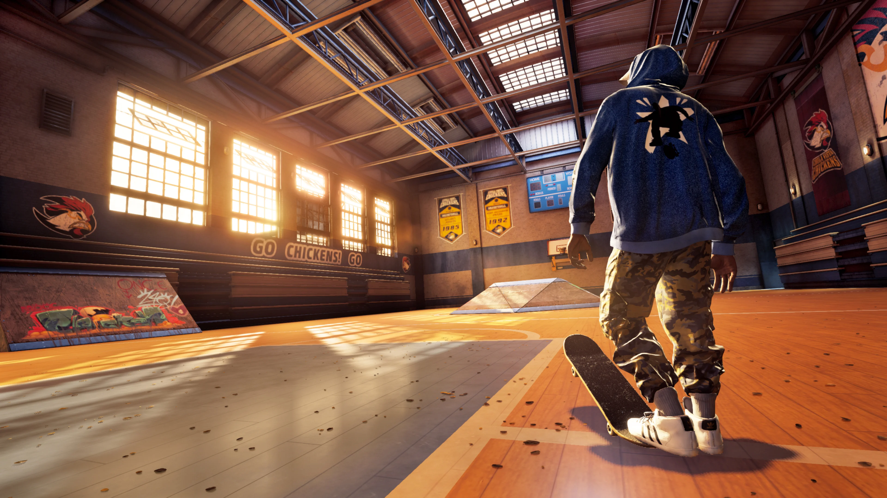

Sports
Haxball
If you wanna play a chill soccer game with a group of friends or just join a random lobby then this is a great place for you. You can just join a lobby and play some online soccer and bring your team to victory. You can play it here: https://haxball.com/play
FIFA 21

EA SPORTS FIFA 21 brings you unrivaled authenticity with more than 30 official leagues, 700+ teams, and 17,000+ authentic players. With many game modes such as career mode, ultimate team, pro clubs, and volta, there is surely something for all soccer fans in this game!. Play it here: https://www.ea.com/games/fifa/fifa-21
Tony Hawk's Pro Skater 1 + 2
The two first Tony Hawk Pro Skater games were unmatched in their extremely fun skating simulation game. Now that they are remastered, you can rediscover that joy in 2020 with updated graphics and up to 4k resolutions. You can buy it here at: https://www.tonyhawkthegame.com/